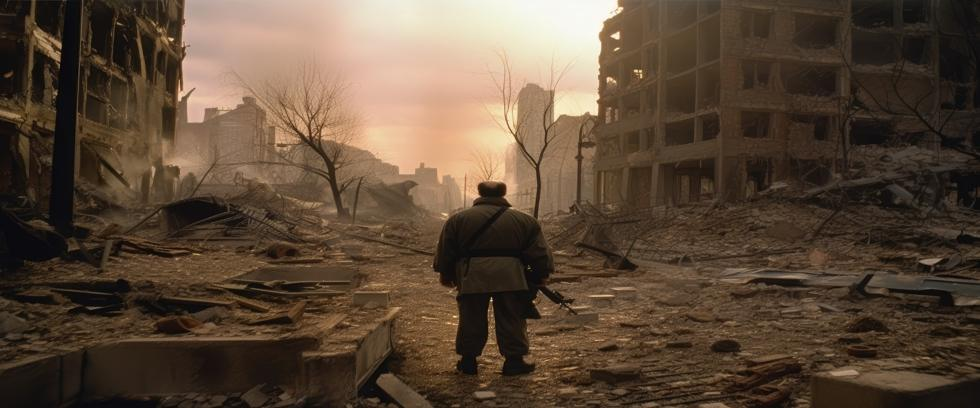

We have lived under the shadow of nuclear weapons since World War II. During that time, a full-scale nuclear war has almost happened on several occasions that we know about. Those close calls are a matter of public record, yet individual people are seldom aware of them.
The Cuban Missile Crisis is common knowledge, but who remembers Stanislav Petrov or Leonard H. Perroots? Not to mention the accidental training tape scare, the faulty 46-cent computer chip, or the Norwegian Rocket Incident.
Nuclear wars were too close for comfort each time. Wars that would have been far more devastating than the Cuban Missile Crisis ever could have been – if only because nuclear arsenals grew much larger in the years that followed. We survived because of two things: individual action that sometimes went against established protocol. And because of luck. Take away either, and we wouldn’t be here today.
Many people assume nuclear war is unlikely, if only because it has not happened yet. But probability does not work that way. Failures may be rare in a well-designed system, but they will occur in time. The question is not if something will go wrong. The question is when. And most important of all:
What happens after it does?
Close Calls Are Not Anomalies
Nuclear close calls are often treated as historical curiosities, isolated incidents that are safely in the past. In reality, they are recurring features of an inherently unstable system. It stands to reason that nuclear near-misses could not happen if the system truly were perfect. But they do happen.
False alarms, misread data, equipment failures, and nuclear misunderstandings have all occurred with disturbing regularity. Which shouldn’t be surprising, considering the mathematical law of probability reveals that if something can possibly happen, sooner or later it will.
During the Cold War, the United States and the Soviet Union experienced moments when civilization-ending nuclear wars were nearly triggered by mistake. In some cases, tragedy was only avoided because a single individual went against military procedure and stalled for additional time to verify an incoming strike.
These episodes did not end with the Cold War. The Norwegian rocket incident in 1995 was terrifying. Thirty years later, nuclear weapons still remain on high alert. Their complex command and control structure increasingly relies on software-managed systems, intricate mechanical components, advanced electronic circuitry, and encrypted communications networks.
But software is inherently vulnerable, mechanical and electronic components can fail, and communications networks may be compromised. No one knows how many additional avenues to potential failure exist, but rapid decision-making under extraordinary stress deserves a mention – especially with our civilization at stake.
Murphy’s Law may be a simple folk catechism, but it’s not wrong: The more complicated the device, the more ways it can fail.
Probability Has No Memory
Probability has no memory of past events. Nor does it care about personal intentions or a leader’s commitment to peace. Scientists and engineers who design nuclear safeguard systems cannot possibly calculate the odds that those safeguards will fail. Far too many variables are involved.
Those who defend nuclear deterrent capabilities argue that catastrophic failure is possible, but unlikely enough to be acceptable. Yet their logic collapses when applied over decades.
A one-in-a-million chance of failure each day is not that comforting when applied over a century. In two days, those odds are cut in half. In a given year, they become about 1 in 25,000 – if the daily odds really were one-in-a-million. The fact that we have experienced so many close calls in but a fraction of the time suggests they are not.
Many alarming incidents likely remain classified or unknown. Yet each represents a roll of the dice with our entire civilization at stake.
Human Judgment Under Pressure
Nuclear launch decisions may ultimately depend upon human judgment under duress. They must be made quickly, often within minutes. In those fleeting moments, leaders must hastily interpret what information they have, always aware that hesitation could be fatal.
Mental clarity comes into play. Fatigue, fear, miscommunication, and even institutional pressures can influence rational thinking and decision-making. Mistakes become more prevalent. Believing that an adversary is about to strike first may be enough to justify preemptive action, even if the data is not yet conclusive.
The uncomfortable truth is that nuclear war does not require malicious intent. It only requires a chain of random events to align at a given moment. Such an alignment is unlikely to occur on any particular day, but the odds of it eventually happening if the status quo remains unchanged are 100%.
It’s a mathematical certainty.
Technology Cuts Both Ways
Modern technology is often presented as a solution to nuclear risk. Faster communications and automated systems, improved electronics, and increasing AI integration are claimed to reduce human error. In some cases, they do. In others, the opposite is true. As systems grow more complex, understanding them as a whole becomes increasingly difficult, even for those who designed them.
In reality, the possibility of human error grows stronger when automated systems further compress already short timelines – especially if overconfidence in technology derails critical thinking.
The Illusion of Control
Numerous close calls expose the myth that nuclear weapons are reliably controlled. They are not. Control has been inconsistent and repeatedly undermined.
Nuclear-armed states say their safeguards are sufficient, that lessons have been learned, and that nuclear war is unlikely enough to be irrelevant. Yet past accidents and near misses are legion, and each new generation inherits fallible systems built by the last without fully comprehending the risks they accepted along the way.
That our civilization is still here has less to do with our mastery of safeguards for nuclear weapons and more to do with simple fortune. The difference matters.
Rolling the Dice With Time
When it comes to nuclear weapons, the law of probability rules the long term. Nuclear command and control systems are not perfect and cannot operate indefinitely without incident.
One day, the sun may rise like it always does. People will go about their business in the usual way. By afternoon, some will be thinking about what to have for dinner that evening. But when dinnertime comes, no one in the world will be thinking about food.
Each sunrise that nuclear weapons still exist could be the beginning of that day.
Not Our Strategy
At Our Planet Project Foundation, we realize the mathematical law of probability cannot be beat. Nuclear close calls are not isolated incidents from the past, but urgent cries for attention today. They tell us the system is unstable, and time is not on our side.
That our civilization is precariously balanced on the edge of nuclear annihilation is insane. The only way to be certain the law of probability never catches up with us is to eliminate the weapons that made odds and probability part of the equation in the first place.